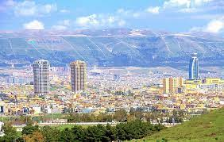

Sulaimani, located in the Kurdistan Region of Iraq, is a city known for its cultural vibrancy, historical significance, and picturesque landscapes. Nestled in the eastern part of Kurdistan, Sulaimani has emerged as a key cultural and economic hub. The city boasts a rich history, blending ancient heritage with modern development. Visitors can explore its bustling bazaars, historic landmarks, and enjoy the local cuisine that reflects the diverse influences of the region. Sulaimani is not only a center for commerce and trade but also a melting pot of Kurdish traditions, making it a captivating destination that encapsulates the spirit of Kurdistan.
